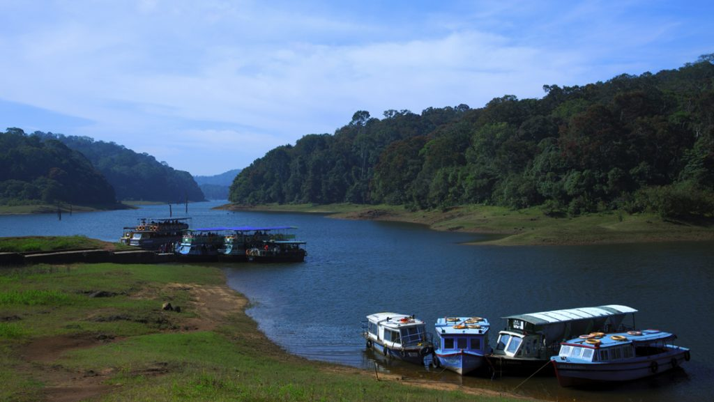
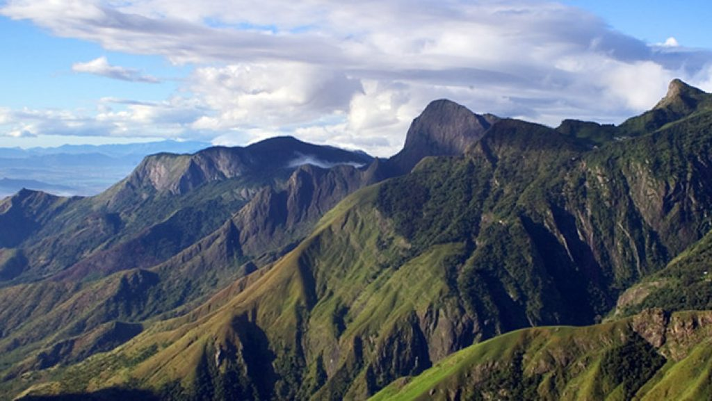
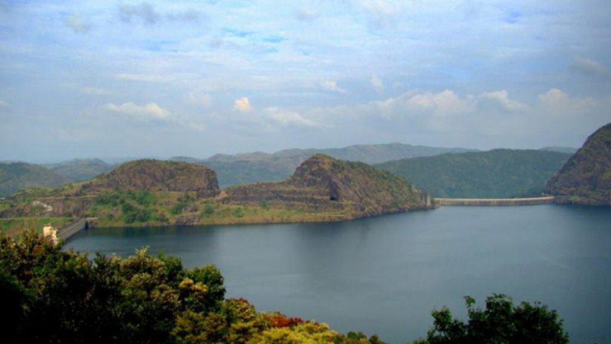

Idukki
The very sound of the word Thekkady conjures up images of elephants, unending chains of hills and spice scented plantations. The Periyar forests of Thekkady is one of the finest wildlife reserves in India. Spreads across the entire district are the picturesque plantations and hill towns that nestle beautiful trails for treks and mountain walks.
Munnar rises as three mountain streams merge – Mudrapuzha, Nallathanni and Kundala. 1,600 m above sea level, this hill station was once the summer resort of the erstwhile British Government in South India. Sprawling tea plantations, picturesque towns, winding lanes and holiday facilities make this a popular resort town. Among the exotic flora found in the forests and grasslands here is the Neelakurinji. This flower which bathes the hills in blue once in every twelve years, will bloom next in 2018. Munnar also has the highest peak in South India, Anamudi, which towers over 2,695 m. Anamudi is an ideal spot for trekking.
The Idukki Dam, located in Kerala, India, is a 168.91 m (554 ft) tall arch dam. The dam stands between the two mountains – Kuravanmala (839)m and Kurathimala (925)m. It was constructed and is owned by the Kerala State Electricity Board. It supports a 780 MW hydroelectric power station.
